الحل
| 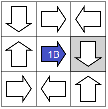 | یشیر السهم المعطى في البدایة إلى أنه من الضروري وضع سهم أزرق على یمینه. |
| 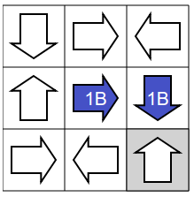 | یشیر السهم الذي تمت إضافته للتو إلى أنك بحاجة إلى وضع سهم أزرق أسفله. |
| 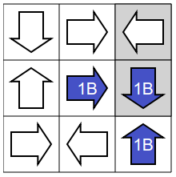 | في العمود الأیمن، یشیر السهم الأزرق الذي تم إضافته للتو في الزاویة السفلیة إلى السهم الأزرق الموجود أعلاه. وبالتالي هناك بالفعل سهم أزرق في اتجاهه. لتجنب وجود سهم ثاني في نفس الاتجاه یجب وضع سهم أصفر في الجزء العلوي من هذا العمود. |
| 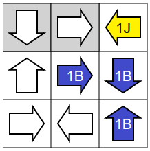 | یشیر السهم الموجود في منتصف الصف العلوي إلى سهم أصفر، وبالتالي یجب أن یكون هذا السهم أصفر. |
| 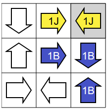 | في الصف العلوي ، یشیر السهم الأصفر الأیمن إلى سهم أصفر آخر، وهو السهم الأوسط، ولتجنب الإشارة إلى سهمین أصفرین ، یجب وضع سهم أزرق في یسار هذا الصف. |
| 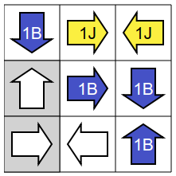 | یشیر السهم الموجود في منتصف العمود الأیسر إلى سهم أزرق. وبالتالي یجب أن یكون هذا السهم أزرق. | 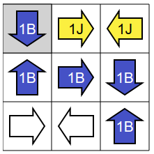 | في العمود الأیسر، یشیر السهم الأزرق في الأعلى إلى سهم أزرق آخر، وهو السهم الموجود في الوسط، و لتجنب الإشارة الى سهمین أزرقین ، یجب وضع سهم أصفر في أسفل هذا العمود. | 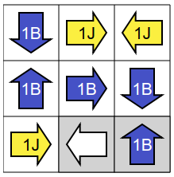 | یجب أن یشیر السهم الأصفر في أسفل الیسار إلى سهم أصفر آخر، ولذلك یجب وضع سهم أصفر في المربع المتبقي من الصف السفلي. | 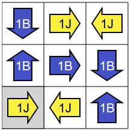 | اكتمل الحل ! |
قبل أن نبدأ یمكن ملاحظة أن هذه المسألة متناظرة بین اللونین الأزرق والأصفر، بمعنى أنه لو كان لدینا حل صحیح ثم غیرنا جمیع الأسهم الصفراء بأسهم زرقاء والعكس فسنحصل على حل صحیح آخر، ولذلك فلنا الحریة في تحدید لون السهم الأول الذي نبدأ به.
في ما یلي ، سنبدأ دائًما بوضع سهم أزرق.
سوف نجرب بدایات مختلفة حتى نصل إلى طریقة نضمن فیها التقدم في تلوین الأسهم دون خطأ.
في المحاولة الاولى. لنفترض أننا سنحاول ملئ الصف الأول وسنجد أن هناك طریقتین مختلفتین لإتمام ذلك وفق القواعد:
| 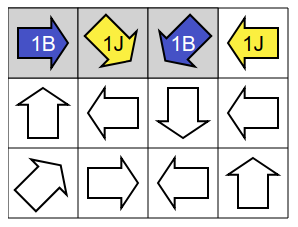 | الطریقة الأولى. | 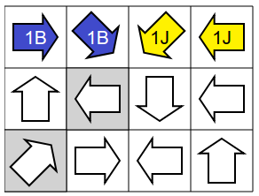 | الطریقة الثانیة. |
نظًرا لوجود احتمالین لا یمكننا التأكد من أیهما الصحیح فسوف نجرب بدایة أخرى.
في المحاولة الثانیة. سنحاول ملئ الصف الأخیر وسنجد أن هناك طریقتین مختلفتین لإتمام ذلك وفق القواعد :
 |
الطریقة الأولى. | 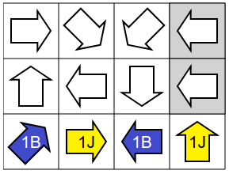 | الطریقة الثانیة. |
نظًرا لوجود احتمالین لا یمكننا التأكد من أیهما الصحیح فسوف نجرب بدایة أخرى.
في المحاولة الثالثة. سنحاول ملئ القطر، وسنجد فیه ثلاثة أسهم منها إثنان یشیران لبعض.
| 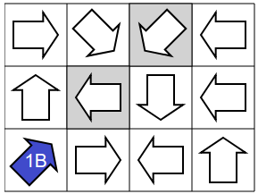 | لنبدأ ، كما أوضحنا سابقا ، بوضع سهم أزرق. |
| 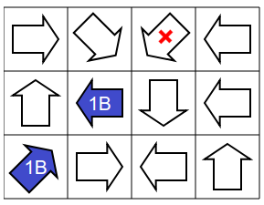 | لا یمكن وضع سهم أزرق في المربع الأوسط من القطر، لأن السهم الأخیر في القطر لا یمكن أن یشیر إلى سهمین أزرقین. |
| 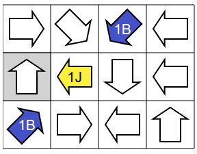 | نستنتج أن السهم الأوسط في القطر یجب أن یكون أصفر (لأنه لا یمكن أن یكون أزرق) ، ولذلك یجب أن یكون السهم الثالث أزرق (لأن السهم الأزرق في الزاویة یجب أن یشیر إلى سهم أزرق آخر). |
| 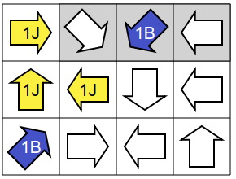 | السهم الأصفر في الوسط یساعد في استنتاج موقع سهمین أصفرین إضافیین. |
| 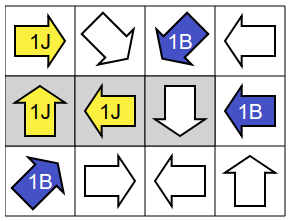 | لا یمكن أن یكون لون السهم الأوسط في العمود الأیمن أصفًرا، لأنه یشیر إلى سهمین أصفرین وبذلك فلونه أزرق. |
| 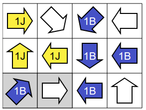 | السهم الأزرق الذي تم اضافته مؤخرا یساعد على استنتاج موقع سهمین أزرقین إضافیین. |
| 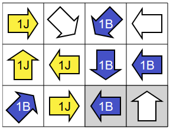 | لا یمكن أن یكون لون السهم الثاني (من على اليسار) في الصف الأخیر أزرقا، لأن السهم الثاني (من على اليمين) في نفس الصف یشیر إلى سهم واحد أزرق، وبذلك فلونه أصفر. |
| 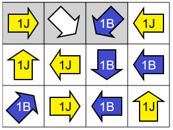 | السهم الأصفر الأخیر یساعد على استنتاج موقع سهمین أصفرین إضافیین. | 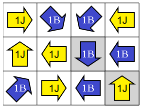 | یجب أن یكون السهم الأخیر باللون الأزرق لأن السهم الموجود في یمین الصف الأول یشیر إلى سهم واحد أصفر فقط. اكتمل الحل ! |
من الحكمة أن تبدأ بخط من المربعات (التي تحتوي على الأسهم) بحيث یملك الخط أقصى عدد من القیود، مثل الأسهم التي تشیر إلى بعضها، على سبیل المثال سندرس أحد الأقطار الرئیسیة، وسنبدأ بوضع سهم أزرق أو أصفر في الزاویة الیسرى في الأسفل.
في المحاولة الأولى. سنبدأ بتلوین السهم في الزاویة الیسري في الأسفل باللون الأصفر :
| 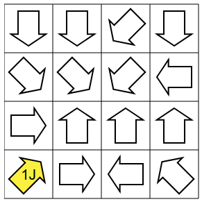 | اذا كان المربع التالي في القطر يحتوي على سهم اصفر، ففي المربع الذي يليهم في نفس القطر لن نجد سهم مناسب يشير إلى سهمين أصفرين لذلك، سيكون لون السهم أزرق في المربع التالي. وبالتالي في المربع الذي يليهم ستكون إشارته إلى سهمين أزرق و أصفر ولأنه ليس لدينا سهم يشير الي سهم أزرق واحد سنلونه باللون الأصفر. |
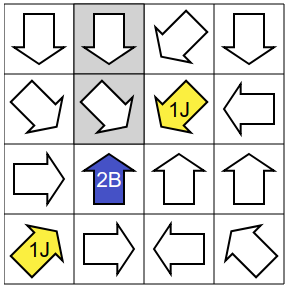 | السهم الأزرق یساعد على استنتاج موقع سهمین إضافیین جدیدین. | 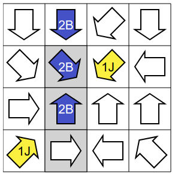 | السهم الأزرق الموجود في العمود الثاني من الیسار والذي یشیر إلى الزاویة الیمنى في الأسفل یساعد على استنتاج موقع سهمین إضافیین. | 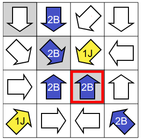 | في هذه الحاله السهم الأزرق المظلل بالأحمر لا يمكنه أن يشير إلى سهمين أزرقين (لأن أحدهما أصفر بالفعل). |
في المحاولة الثانیة. سنبدأ من الزاویة الیسرى في الأسفل مرة أخرى ولكن بوضع سهم أزرق بدلا من الأصفر..
| 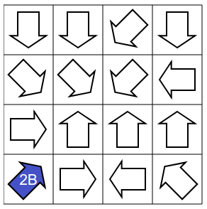 | لنبدأ بزاويه زرقاء. |
| 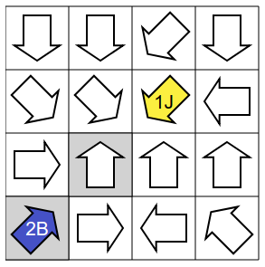 | اذا كان السهم الذي يلي السهمين الأزرق و الأبيض في نفس القطر أصفر فستواجهنا مشكلة، لأننا يجب ان نلون السهم الذي بينهما باللون الاصفر، وبذلك لن نستطيع ان نجعل السهم الأزرق في الزاويه يشير إلى سهمين أزرقين . |
| 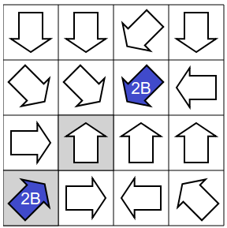 | لذلك سنلونه باللون الأزرق ولأنه يجب أن يشير إلى سهمين أزرقين، سنلون السهم الذي في المنتصف باللون الأزرق. |
| 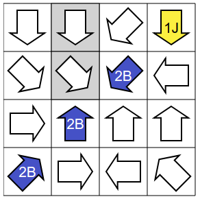 | يشير السهم الأزرق الجديد الي سهمين غير ملونين، سنلونهم باللون الأزرق. اذا كان لون السهم الذي في الزاويه العليا على اليمين باللون الازرق فسيكون السهم في الزاويه الأخري مشير إلى ثلاث أسهم زرقاء، لذلك سنلونه باللون الأصفر. |
| 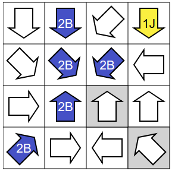 | السهم الأزرق في الصف الثاني (من أعلى لأسفل) والعمود الثالث (من اليمين لليسار) يشير إلى سهمين غير ملونين، سنلونهم باللون الأزرق. |
| 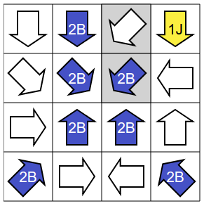 | السهم الأزرق في الصف الثالث (من أعلى لأسفل) والعمود الثاني (من اليمين لليسار) يشير إلى سهمين احدهم غير ملون، سنلونه باللون الأزرق. |
| 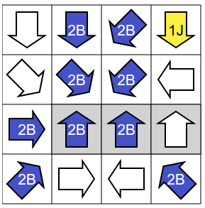 | السهم الأزرق في الصف الثالث (من أعلى لأسفل) والعمود الرابع (من اليمين لليسار) يشير إلى سهمين أزرقين وسهم غير ملون، اذا لوناه للأزرق فسيشير ألي ثلاث أسهم من اللون الأزرق، لذلك سنلونه باللون الأصفر. نكرر هذه العملية مع بقية الأسهم الزرقاء التي ينطبق عليها نفس الحالة، السهم الأزرق في الصف الأول و العمود الثالت و السهم الأزرق في الزاويه السفلى على اليمين. |
| 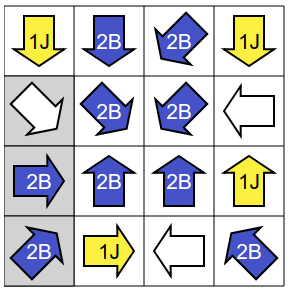 | السهم الأصفر في الزاويه الأعلى علي اليسار لا يشير إلى سهم أصفر، لذلك سنلون السهم الغير ملون باللون الأصفر، نكرر نفس العملية مع السهم الأصفر في الصف السفلي. السهم الغير ملون في الصف الثاني علي اليمين يشير إلى سهمين أزرقين، لذلك نلونه باللون الأزرق. |
 |
اكتمل الحل ! |